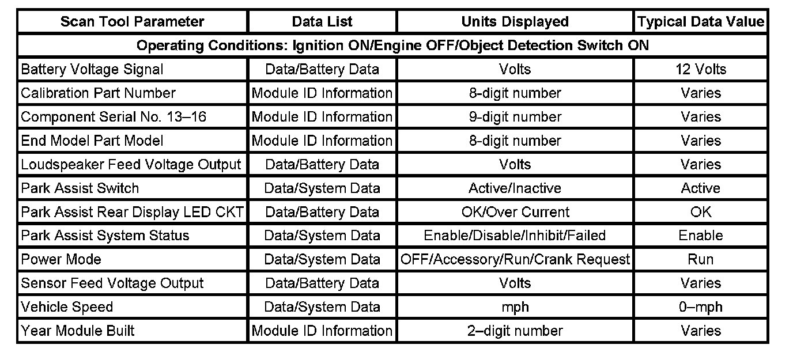

Scan Tool Data List
SCAN TOOL DATA LIST

The scan tool data list contains all the object detection system related parameters that are available on the scan tool. The parameters in the list are arranged in alphabetical order. The column, Data List, indicates the location of the parameter within the scan tool menu selections.
Use the object detection scan tool data list as directed by a diagnostic table or in order to supplement the diagnostic procedures. Begin all of the diagnostic procedures with the Diagnostic System Check - Vehicle. Use the scan tool data list after the following is determined:
- There is no published diagnostic trouble code (DTC) procedure nor published symptom procedure for the customer concern.
- The DTC or symptom diagnostic procedure indicated by the diagnostic system check does not resolve the customer concern.
The typical data values are obtained from a properly operating vehicle under the conditions specified in the second row of the scan tool data list table. Comparison of the parameter values from the suspect vehicle with the typical data values may reveal the source of the customer concern.